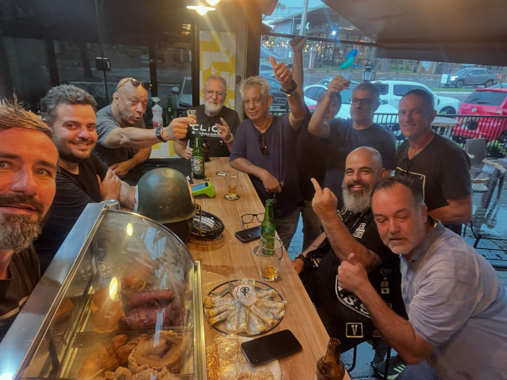

Edição passada
Paella caipira
Uma paella feita para reunir a turma, em uma edição comandada por Gilmar e Silvão.
Nações Mall · Jardim Aquarius
Comida de boteco, conversa sem pressa e espaço para celebrar do seu jeito.
Na Bodega do Alê, a conversa pode começar à mesa. Um espaço aberto no Nações Mall, com bons papos e comida feita para compartilhar.
Por aqui, cada ocasião pode ganhar o seu ritmo: uma passada para comer, um almoço em família ou uma comemoração com a sua turma.
Conheça o que está tomando formaA equipe está finalizando o cardápio de petiscos. Os almoços de sábado e domingo estão em planejamento — novidades aparecem primeiro no Instagram.
Este catálogo reúne registros de publicações anteriores. Itens, preços e disponibilidade podem mudar; confirme as informações atuais diretamente com a Bodega.

A mesa fica melhor quando cabe todo mundo.Aniversário, encontro de amigos, confraternização ou uma celebração sem motivo especial: a Bodega também recebe eventos particulares.
Av. Comendador Vicente de Paulo Penido, 174
Nações Mall · Jardim Aquarius
São José dos Campos — SP
Confira no Instagram as novidades, o cardápio em finalização e as informações mais recentes da casa.
Abrir Instagram